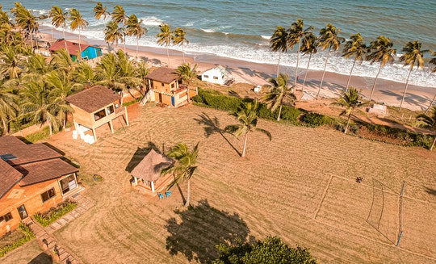

ACCRA DEMOGRAPHICS
One of the most interesting things to note about the demographics of Accra is the high population of younger residents. Approximately 56% of the people are under the age of 24. This trend is not expected to change in the coming years. There is a slightly higher population of males than females in the city, which is on par with numbers recorded across the country.
Data show about 45% of Accra’s residents are immigrants that initially lived in other African countries. However, migration rates are expected to decrease in the future. There are multiple low-income housing areas located in Accra, with about 58% of the total population living in one of these areas.
Major ethnic groups of Accra include Akan, Ga-Dangme and Ewe. The largest religious groups are Christians, which make up 83% of the population. Muslims make up 10.2% of the population, and 4.6% claim no religion.
Source: World Population Review

ACCRA HISTORY
During the late 1800s, the city was captured by the British. It was in 1877 that the city was designated as the capital of the Gold Coast. It was during this time that the city began to expand and its population grew. Boundaries continued to expand throughout the early 1900s.
A turning point for the city occurred in 1908 with the construction of the Accra-Kumasi railway, which connected Accra to other regions in Ghana.
After World War II, the city of Accra’s central business district was developed. Rural migrants also settled in surrounding neighborhoods, resulting in shanty-towns. Further development of the town was planned to include a country club, polo and cricket fields, and ornamental fountains and statues. However, Prime Minister Kwame Nkrumah developed his plan that focused more on pride and nationalism.
Today, the city is a business and transportation hub in Ghana. It is home to many popular tourist attractions, including the Academy of Arts and Science and the National Theater. The city also boasts a multi-story hotel, restaurants, and other buildings that were built during the 1990s. The city’s economy is reliant upon the finance and commercial sectors and industries including processed food, textiles, and lumber.”
Source: World Population Review